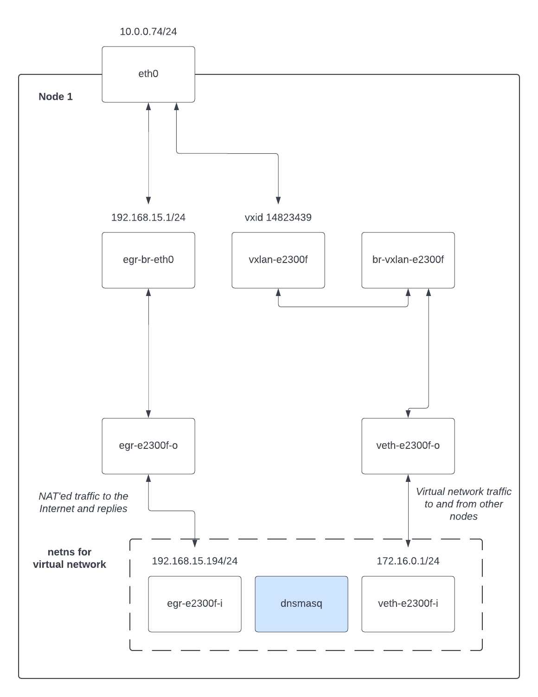
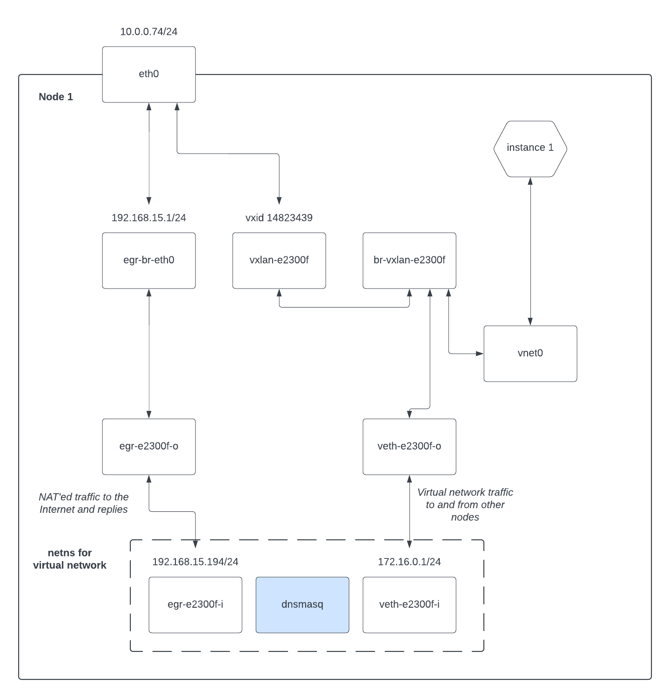
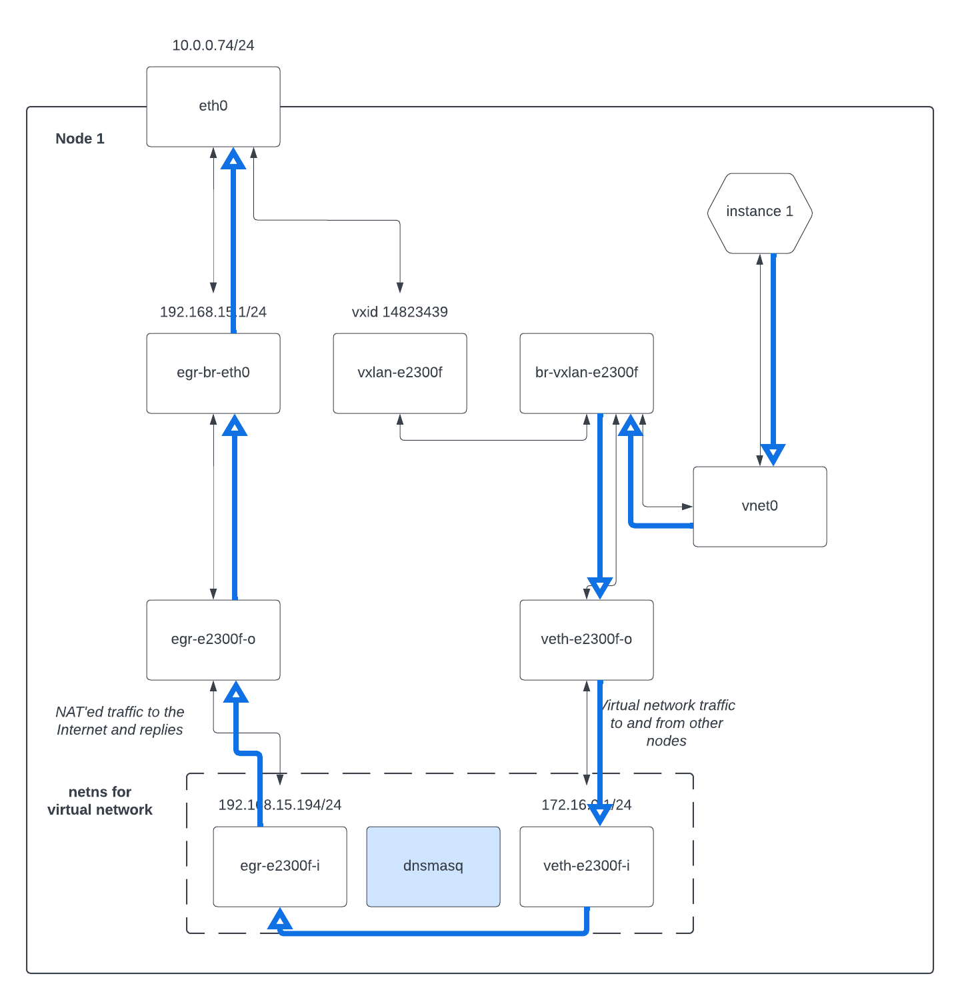
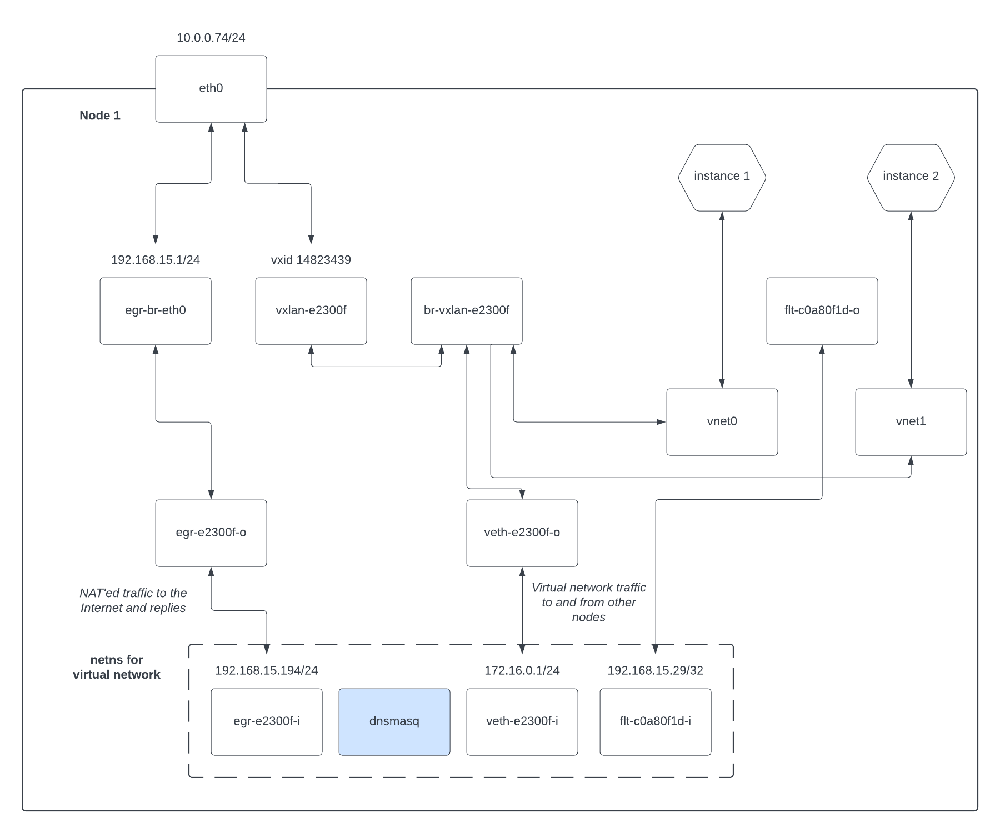
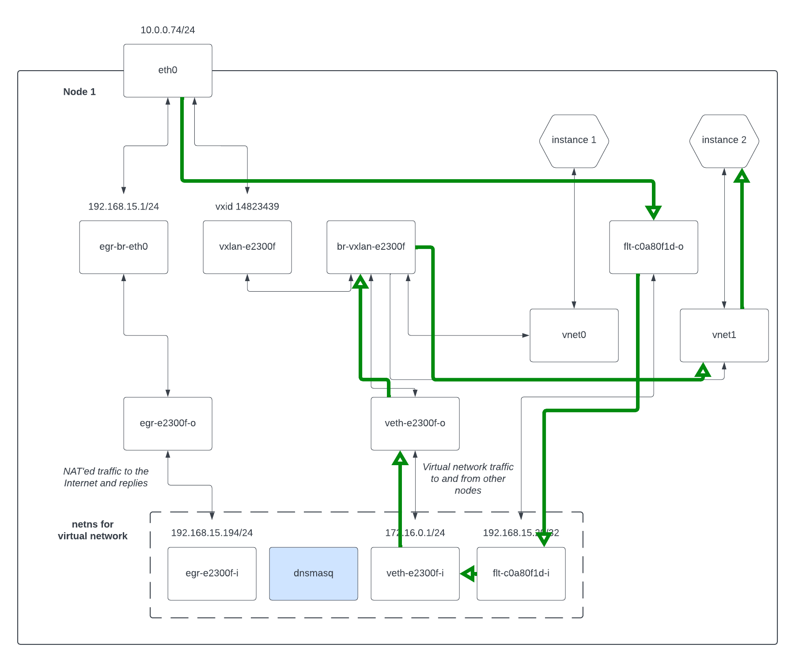
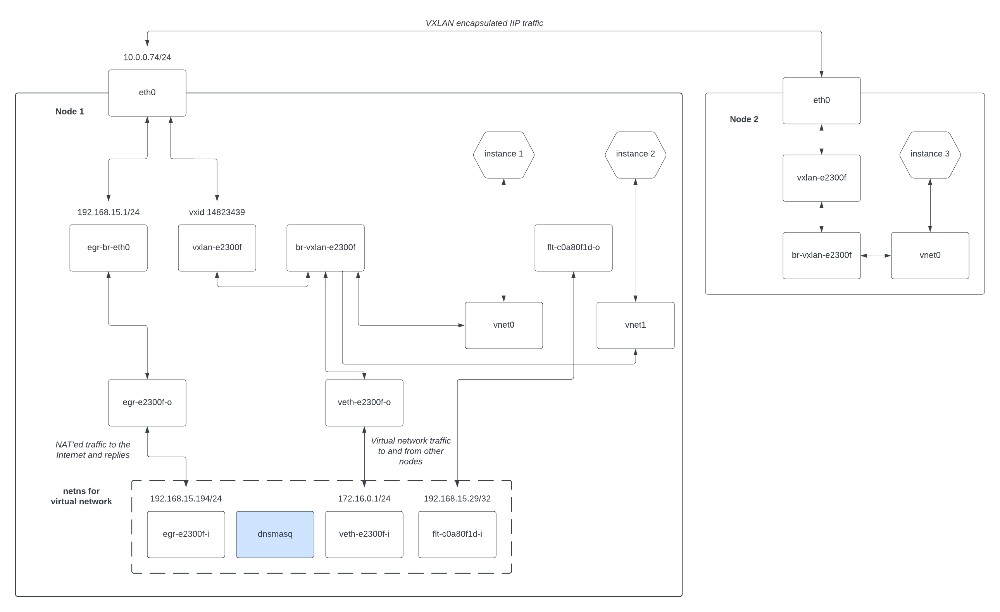

Explaining Shaken Fist networking¶
Shaken Fist networking is complicated, but not as complicated as OpenStack Neutron -- its more like the old OpenStack Compute nova-network implementation if you're looking for a mental model. Let's work through some examples to explain what it is doing.
Asynchronous network deletion (REST API)
DELETE /networks/{network_ref} and DELETE /networks now return
HTTP 202 (Accepted) with a cluster-operation handle in the body
rather than performing the work synchronously. Operators scripting
directly against the REST API (rather than via the Python client)
must poll the returned op uuid at
GET /clusteroperations/{op_type}/{op_uuid} until the op reaches a
terminal state (complete, abort, deleted, or error). The
Python client (shakenfist_client) handles this transparently —
delete_network() polls by default and raises
ClusterOperationFailed on a terminal-error state. See the
clusteroperations API reference
for the full polling contract.
Single node install, no networks or instances¶
debian@test:~$ ip a
1: lo: <LOOPBACK,UP,LOWER_UP> mtu 65536 qdisc noqueue state UNKNOWN group default qlen 1000
link/loopback 00:00:00:00:00:00 brd 00:00:00:00:00:00
inet 127.0.0.1/8 scope host lo
valid_lft forever preferred_lft forever
2: eth0: <BROADCAST,MULTICAST,UP,LOWER_UP> mtu 8950 qdisc pfifo_fast state UP group default qlen 1000
link/ether 02:00:00:00:0e:a3 brd ff:ff:ff:ff:ff:ff
altname enp0s11
altname ens11
inet 10.0.0.74/24 brd 10.0.0.255 scope global eth0
valid_lft forever preferred_lft forever
3: egr-br-eth0: <NO-CARRIER,BROADCAST,MULTICAST,UP> mtu 1500 qdisc noqueue state DOWN group default qlen 1000
link/ether f6:d1:c6:05:15:fd brd ff:ff:ff:ff:ff:ff
inet 192.168.15.1/24 scope global egr-br-eth0
valid_lft forever preferred_lft forever
Explaining this:
lois the loopback interface, and not relevant here.eth0is the primary interface for the machine, and10.0.0.74is the IP address of the machine.egr-br-eth0is a linux bridge that is currently empty and has the IP192.168.15.1, which is the first IP on this cluster's floating network. Networks will get attached
Single node install, one network and no instances¶
Let's make a network, but not put any instances on it yet:
debian@test:~$ sf-client network create demo 172.16.0.0/24
uuid : 17be6538-8f96-4ccb-b71e-a7e3022fead3
name : demo
vxlan id : 14823439
netblock : 172.16.0.0/24
provide dhcp : True
provide nat : True
floating gateway: 192.168.15.194
namespace : system
state : created
Metadata:
debian@test:~$ ip a
1: lo: <LOOPBACK,UP,LOWER_UP> mtu 65536 qdisc noqueue state UNKNOWN group default qlen 1000
link/loopback 00:00:00:00:00:00 brd 00:00:00:00:00:00
inet 127.0.0.1/8 scope host lo
valid_lft forever preferred_lft forever
2: eth0: <BROADCAST,MULTICAST,UP,LOWER_UP> mtu 8950 qdisc pfifo_fast state UP group default qlen 1000
link/ether 02:00:00:00:0e:a3 brd ff:ff:ff:ff:ff:ff
altname enp0s11
altname ens11
inet 10.0.0.74/24 brd 10.0.0.255 scope global eth0
valid_lft forever preferred_lft forever
3: egr-br-eth0: <BROADCAST,MULTICAST,UP,LOWER_UP> mtu 1500 qdisc noqueue state UP group default qlen 1000
link/ether f6:d1:c6:05:15:fd brd ff:ff:ff:ff:ff:ff
inet 192.168.15.1/24 scope global egr-br-eth0
valid_lft forever preferred_lft forever
10: vxlan-e2300f: <BROADCAST,MULTICAST,UP,LOWER_UP> mtu 8900 qdisc noqueue master br-vxlan-e2300f state UNKNOWN group default qlen 1000
link/ether 6a:c0:ee:6f:83:6f brd ff:ff:ff:ff:ff:ff
11: br-vxlan-e2300f: <BROADCAST,MULTICAST,UP,LOWER_UP> mtu 8900 qdisc noqueue state UP group default qlen 1000
link/ether 8a:a6:8d:31:c9:09 brd ff:ff:ff:ff:ff:ff
13: veth-e2300f-o@if12: <BROADCAST,MULTICAST,UP,LOWER_UP> mtu 8900 qdisc noqueue master br-vxlan-e2300f state UP group default qlen 1000
link/ether 6e:34:bc:25:68:c2 brd ff:ff:ff:ff:ff:ff link-netns 17be6538-8f96-4ccb-b71e-a7e3022fead3
15: egr-e2300f-o@if14: <BROADCAST,MULTICAST,UP,LOWER_UP> mtu 1500 qdisc noqueue master egr-br-eth0 state UP group default qlen 1000
link/ether 5a:9c:f3:eb:2f:bc brd ff:ff:ff:ff:ff:ff link-netns 17be6538-8f96-4ccb-b71e-a7e3022fead3
Here, we allocated a network, which was assigned VXLAN id 14823439 (e2300f in
hexadecimal). That created a VXLAN interface named vxlan-e2300f on the machine,
which is where other machines in a multinode cluster would attach for the VXLAN
mesh which forms our virtual network. br-vxlan-e2300f is a linux bridge used to
attach the local network namespace for this network to the VXLAN interface. That
is, the members of the bridge look like this:
debian@test:~$ sudo brctl show br-vxlan-e2300f
bridge name bridge id STP enabled interfaces
br-vxlan-e2300f 8000.8aa68d31c909 no veth-e2300f-o
vxlan-e2300f
Similarly, the egress bridge egr-br-eth0 now contains a veth as well:
debian@test:~$ sudo brctl show egr-br-eth0
bridge name bridge id STP enabled interfaces
egr-br-eth0 8000.f6d1c60515fd no egr-e2300f-o
And there is a linux network namespace named with the UUID of the network:
That linux network namespace contains the other ends of the veths:
debian@test:~$ sudo ip netns exec 17be6538-8f96-4ccb-b71e-a7e3022fead3 ip a
1: lo: <LOOPBACK> mtu 65536 qdisc noop state DOWN group default qlen 1000
link/loopback 00:00:00:00:00:00 brd 00:00:00:00:00:00
12: veth-e2300f-i@if13: <BROADCAST,MULTICAST,UP,LOWER_UP> mtu 1500 qdisc noqueue state UP group default qlen 1000
link/ether 36:da:87:ea:ce:16 brd ff:ff:ff:ff:ff:ff link-netnsid 0
inet 172.16.0.1/24 scope global veth-e2300f-i
valid_lft forever preferred_lft forever
inet6 fe80::34da:87ff:feea:ce16/64 scope link
valid_lft forever preferred_lft forever
14: egr-e2300f-i@if15: <BROADCAST,MULTICAST,UP,LOWER_UP> mtu 1500 qdisc noqueue state UP group default qlen 1000
link/ether d2:b0:c8:31:f4:83 brd ff:ff:ff:ff:ff:ff link-netnsid 0
inet 192.168.15.194/24 scope global egr-e2300f-i
valid_lft forever preferred_lft forever
inet6 fe80::d0b0:c8ff:fe31:f483/64 scope link
valid_lft forever preferred_lft forever
This network namespace exists to contain a dnsmasq process providing DHCP to
the virtual network, as well as to contain routing and iptables rules for mangling
traffic into and out of the virtual network.
Specifically, NAT for traffic from the virtual network to the outside world is implemented with routing and iptables like this:
debian@test:~$ sudo ip netns exec 17be6538-8f96-4ccb-b71e-a7e3022fead3 ip route
default via 192.168.15.1 dev egr-e2300f-i
172.16.0.0/24 dev veth-e2300f-i proto kernel scope link src 172.16.0.1
192.168.15.0/24 dev egr-e2300f-i proto kernel scope link src 192.168.15.194
debian@test:~$ sudo ip netns exec 17be6538-8f96-4ccb-b71e-a7e3022fead3 iptables -L -t nat
Chain PREROUTING (policy ACCEPT)
target prot opt source destination
Chain INPUT (policy ACCEPT)
target prot opt source destination
Chain OUTPUT (policy ACCEPT)
target prot opt source destination
Chain POSTROUTING (policy ACCEPT)
target prot opt source destination
MASQUERADE all -- 172.16.0.0/24 anywhere
So, the default route is via the egress veth at egr-e2300f-i (inside the
namespace), which comes out on egr-br-eth0 (outside the namespace) to be routed
as normal. Traffic to other machines participating in this virtual network (that
is, with the same VXLAN id configured), is routed to veth-e2300f-i (inside the
namespace) which comes out on the br-vxlan-e2300f (outside the namespace) bridge
which is wired to the linux kernel VXLAN interface at vxlan-e2300f. Finally,
traffic to other floating IPs on 192.168.15.0/24 is routed to the egress
bridge as well.
The iptables MASQUERADE entry is there to convert internal addresses to the
external 192.168.15.194 "floating gateway" address so instances can talk outside
their virtual network.
Perhaps a diagram would help!

Single node install, one network and one instance with no floating IP¶
Now let's create a single instance on that network, with the instance specifically not having a floating IP:
debian@test:~$ sf-client instance create demo 1 1024 -d 10@debian:11 -n demo
uuid : 3b9c13ee-405f-4195-b904-cffb34e022d3
...
Interfaces:
uuid : afc470fb-8348-4711-8c16-be4c4662d705
network : 17be6538-8f96-4ccb-b71e-a7e3022fead3
macaddr : 02:00:00:bd:cd:9b
order : 0
ipv4 : 172.16.0.232
floating: None
model : virtio
...
There is only one new outer network interface created by adding the instance:
debian@test:~$ ip a
...
16: vnet0: <BROADCAST,MULTICAST,UP,LOWER_UP> mtu 8900 qdisc noqueue master br-vxlan-e2300f state UNKNOWN group default qlen 1000
link/ether fe:00:00:bd:cd:9b brd ff:ff:ff:ff:ff:ff
vnet0 is a libvirt construct to attach the virtual machine's network interface
to the host OS. We attach that interface to the bridge that is the virtual network
for this machine, in this case br-vxlan-e2300f:
debian@test:~$ sudo brctl show br-vxlan-e2300f
bridge name bridge id STP enabled interfaces
br-vxlan-e2300f 8000.8aa68d31c909 no veth-e2300f-o
vnet0
vxlan-e2300f
There are no changes to the inside of the network namespace for this VM -- the
dnsmasq process for example is already connected to the virtual network by
virtue of the veth-e2300f pair and can therefore provide DHCP to the instance.
Again perhaps a diagram will help:

This instance is not accessible from outside our virtual network as it does not
have a floating IP. It can however talk to the outside world because our virtual
network has NAT enabled. This is done by routing the traffic from vnet0 to the
virtual network's network namespace, where the iptables MASQUERADE rule will
then NAT the traffic out.
We can show this NAT traffic like this:

Single node install, one network and one instance with no floating IP¶
Let's add a second instance, but this time with a floating IP associated with it:
debian@test:~$ sf-client instance create floatingdemo 1 1024 -d 10@debian:11 -f demo
uuid : 08c0ae07-6a4b-4f63-9d50-a172039091a0
...
Interfaces:
uuid : a4cfa174-cce9-4cda-907a-b90d7f54efd1
network : 17be6538-8f96-4ccb-b71e-a7e3022fead3
macaddr : 02:00:00:c7:f9:cc
order : 0
ipv4 : 172.16.0.37
floating: 192.168.15.29
model : virtio
...
Again we add a vnet device via libvirt:
debian@test:~$ ip a
...
17: vnet1: <BROADCAST,MULTICAST,UP,LOWER_UP> mtu 8900 qdisc noqueue master br-vxlan-e2300f state UNKNOWN group default qlen 1000
link/ether fe:00:00:c7:f9:cc brd ff:ff:ff:ff:ff:ff
19: flt-c0a80f1d@if18: <BROADCAST,MULTICAST> mtu 8900 qdisc noop state DOWN group default qlen 1000
link/ether aa:5c:1c:0c:7c:f6 brd ff:ff:ff:ff:ff:ff link-netns 17be6538-8f96-4ccb-b71e-a7e3022fead3
But we've also added another veth pair, this time named flt-c0a80f1d on the
outside of the network namespace. You can see in the instance details above that
the floating IP associated with this instance is 192.168.15.29, which just so
happens to be c0a80f1d in hexadecimal. So this veth is how floating IP traffic
is delivered to an instance.
Here's another diagram showing the new setup:

Its important to note that traffic from the instance still goes via the NAT route shown above, while traffic to the instance via the floating IP uses this veth. Replies to floating IP requests return via this veth as well though.
The instance isn't aware of its floating IP at an operating system level at all. That is, inside the network namespace the veth attaches to, we do DNAT to mangle the traffic to the instance:
debian@test:~$ sudo ip netns exec 17be6538-8f96-4ccb-b71e-a7e3022fead3 iptables -L -t nat
Chain PREROUTING (policy ACCEPT)
target prot opt source destination
DNAT all -- anywhere 192.168.15.29 to:172.16.0.37
Chain INPUT (policy ACCEPT)
target prot opt source destination
Chain OUTPUT (policy ACCEPT)
target prot opt source destination
Chain POSTROUTING (policy ACCEPT)
target prot opt source destination
MASQUERADE all -- 172.16.0.0/24 anywhere
So our floating IP of 192.168.15.29 is DNAT'ed to the instance's IP of
172.16.0.37. This means floating IP traffic "bounces" off the network namespace.
To make that work, the inside of the veth is configured with the floating IP:
debian@test:~$ sudo ip netns exec 17be6538-8f96-4ccb-b71e-a7e3022fead3 ip a
...
18: flt-c0a80f1d-i@if19: <BROADCAST,MULTICAST> mtu 1500 qdisc noop state DOWN group default qlen 1000
link/ether fe:cb:4c:4a:17:ef brd ff:ff:ff:ff:ff:ff link-netnsid 0
inet 192.168.15.29/32 scope global flt-c0a80f1d-i
valid_lft forever preferred_lft forever
Note the /32 netmask for that address assignment. Notably, the routing table
for the outer linux still looks like this:
debian@test:~$ ip route
default via 10.0.0.1 dev eth0
10.0.0.0/24 dev eth0 proto kernel scope link src 10.0.0.74
192.168.15.0/24 dev egr-br-eth0 proto kernel scope link src 192.168.15.1
The outer linux knows to route the floating IP down that veth because of this address assigned on the inside of the namespace.
Let's have a final diagram showing how a packet for a floating IP gets to its instance:

Multiple nodes¶
Its actually a relatively small step from the above to multiple hypervisor nodes, as additional nodes don't have the network namespace or the veths -- those exist only on the network node (node 1 in our example).

Routed IPs¶
Shaken Fist v0.8 introduced the concept of routed IPs to support Kubernetes services in the K3S orchestration support. A routed IP is an address from the floating address pool which uses routing to deliver traffic to the relevant virtual network. An interface on the virtual network must then have been configured by the user to answer ARP requests for that address. This works well with metallb, which our K3S orchestration uses to expose services, but would work equally well for other traffic.
Tip
The fundamental difference between a floating IP and a routed IP is whether the destination of the traffic inside the virtual network is aware of the address. A floating IP is packet mangled on its way to an interface so that the interface can't tell that the traffic was sent to a floating IP. On the other hand, an interface with a routed address can tell that the traffic was intended for a specific floating IP, but in return must have been configured to use that floating IP.
The implementation of routed IPs is relatively trivial. For each routed IP, a route on the network node into the relevant virtual network bridge is created. Such a route might look like this:
Interface naming conventions¶
The interface names in the examples above are a contract, not a
coincidence: the privexec daemon derives them independently when adding
and when removing resources, so the add and remove paths must agree on
the names or removal silently does nothing. Exactly that happened when
the floating IP add path dropped the -o suffix from the outer veth end
but the removal path kept looking for it -- every floating IP release
leaked its veth pair and DNAT rule, and reuse of those floating IPs then
failed or misdirected traffic (github issues #3378 through #3383).
All names are derived either from the network's VXLAN id as six lower
case hex digits (e2300f for VXLAN id 14823439 in the examples above),
or from the floating IPv4 address as eight lower case hex digits
(c0a80f1d for 192.168.15.29). Linux limits interface names to 15
characters, which these conventions exactly fill in the worst case.
On the network node:
| Name | Where | Purpose |
|---|---|---|
vxlan-<vxid> |
root namespace | VXLAN mesh interface for the virtual network |
br-vxlan-<vxid> |
root namespace | bridge joining the VXLAN interface, instance taps and the namespace veth |
veth-<vxid>-o / veth-<vxid>-i |
root namespace / network namespace | veth pair attaching the network namespace to br-vxlan-<vxid>; the inner end holds the virtual network gateway address and serves DHCP |
egr-<vxid>-o / egr-<vxid>-i |
root namespace / network namespace | veth pair attaching the network namespace to the egress bridge for NAT and floating traffic |
flt-<hex ip> / flt-<hex ip>-i |
root namespace / network namespace | veth pair delivering traffic for one floating IP; the inner end holds the floating address as a /32 |
egr-br-<nic> |
root namespace | egress bridge on the physical egress NIC, holding the first address of the floating network |
The network namespace itself is named with the UUID of the virtual
network. Note the asymmetry for floating veth pairs: the outer end has
no suffix (not -o), while the inner end is suffixed -i. Each
floating IP also has a DNAT PREROUTING rule inside the network
namespace directing the floating address to the instance's inner
address.
Hypervisor nodes which are not the network node only carry
vxlan-<vxid>, br-vxlan-<vxid> and the instance tap devices.
These conventions are asserted by the unit tests in
shakenfist/tests/test_privexec_floating_ip.py and exercised end to
end by TestFloatingIPLifecycle in the cluster CI suite. If you change
a name, change it in the add path, the remove path, the tests, this
page and docs/components/cloudgood/networking-shakenfist.md together.
Stray vxlan reaping¶
Every node's network maintainer compares the vxlan devices actually present on the host against the networks that node should be carrying. A device which matches nothing is a stray -- residue from a network teardown which did not finish, or from a network which has since been hard deleted entirely.
Once a stray has been present for MAINTAIN_STRAY_VXLAN_GRACE_SECONDS
(default 300) the maintainer acts on it:
- If no
networksrow claims the vxid at all, the maintainer deletesbr-vxlan-<vxid>,veth-<vxid>-o,egr-<vxid>-oandvxlan-<vxid>itself, and records areaped stray vxlanaudit event on the node. Theextrafield of that event names the devices which were actually removed, and the message says why the vxid was considered reapable. If some devices were removed but others could not be deleted, the event ispartially reaped stray vxlaninstead andextracarries afailedlist alongsidedevices; the remaining devices are retried after another grace period. - If the network still exists but no instance on this hypervisor uses
it, the maintainer enqueues an ordinary network teardown operation
for that network on that node instead of touching the devices
itself, and records an
enqueued teardown of stray vxlanaudit event. - Otherwise the stray is left alone and logged once per episode. It is
not re-logged on every pass -- it used to be, which on a busy
cluster produced thousands of identical
Extra vxlan present!lines per day (github issue #3597).
Before either of the first two outcomes touches anything, the
maintainer also asks the host itself: if a device it did not create --
a guest's tap interface -- is still enslaved to br-vxlan-<vxid>,
then a virtual machine is attached to that bridge right now whatever
the database says, and the stray is protected and logged instead. If
that question cannot be answered at all, the stray is likewise
protected.
A bridge which does not exist is an answer to that question, not a
failure to answer it -- nothing can be attached to a bridge which is
not there. This matters because teardown deletes br-vxlan-<vxid>
before vxlan-<vxid>, so a teardown which was interrupted leaves the
vxlan interface behind with no bridge. That is the most common stray
shape there is, and treating it as unanswerable would protect exactly
the residue this reaping exists to remove.
All three audit events are worth watching for. None is an error on its
own -- the maintainer is doing the job it exists to do -- but a node
producing them repeatedly is a node where network teardown is failing
somewhere upstream, and that is worth investigating. Note that a
partially reaped stray vxlan event fires once per stray episode, not
once per retry: later attempts on the surviving devices are silent
until one succeeds. A partially reaped stray vxlan with no follow-up
reaped stray vxlan therefore means a device on that host will not go
away, which usually needs manual attention.
A reap on the network node implies manual cleanup. The devices
listed above are all named from the VXLAN id, so the maintainer can
find them without the network object. The network namespace, and the
NAT and DNAT rules inside it, are named from the network uuid --
which is exactly what has been lost by the time a reap happens. They
are therefore not cleaned up, and once the vxlan devices are gone
nothing in Shaken Fist will report them again. Previously the
never-ending Extra vxlan present! warning was, in effect, the
standing notification that this residue existed; now the single audit
event is the only record, so if you see a reaped stray vxlan event on
your network node, check for a leftover namespace:
Namespaces are named with the virtual network's UUID, so any name which
does not correspond to a network in sf-client network list is residue
and can be removed with sudo ip netns delete <uuid>.
Dispatcher diagnostic events¶
Operators reading the event log for a cluster operation will see two events emitted directly by the queue dispatcher (in addition to the operation-specific audit and mutate events emitted by the operation itself):
execution duration(EVENT_TYPE_USAGE). Emitted when the dispatcher finishes running an op. Carries four fields inextra:seconds— wall-clock time spent insideop.execute()(state writes, coalescing fold, the_apply_*work, the terminal state write).wait_seconds— time between when the op was first inserted intocluster_operationsand when the dispatcher claimed it. This is not queueing alone: it also counts deliberate deferral while an op waits on a dependency, and the seconds a*_high_iobackground op spends gated off while the local disk is busy. Both are designed behaviour, and each is large enough to be the whole of a tail on its own -- the worst operation type measured for the queue-performance plan had a 15.78 s median wait which fell to 0.77 s once deferred ops were excluded. So read a large value againstdefer_countand against the node's disk busy metric before calling it a backup; only once those are excluded does it point at worker saturation or a stuck op blocking the worker. See "Reading these events back" below.defer_count— how many times this op was re-enqueued viadefer()/defer_with_backoff()before finally running. A first-time pickup is0; non-zero values indicate dependency waits or transient retries.queue_name— the queue the op was claimed from. Useful for attributing wait time to a specific priority lane (e.g.networknode-clusteroperation-user_facing_high_io).
The combined event replaces an earlier split into separate
'started executing' and 'execution duration' events. The
combined form halves the eventlog gRPC cost on the dispatcher's
critical path -- profiling identified that cost as the largest
per-op overhead added during the queue-performance work. Ops
loaded outside the dispatch path (unit tests, REST endpoints)
still emit 'execution duration' with seconds only; the
wait fields are populated only when the dispatcher set the
hints.
The same event also carries the coalescing instrumentation, when
the operation reached the cross-op fold's guards at all:
* coalesce_outcome — ran if the fold's SQL was issued, or
which guard skipped it: batch_size_one (the dispatcher
dequeued only this op), not_cluster_wide (a per-node queue,
where folding would be unsafe), type_not_coalescible (this
operation type declares no coalescing at all, which is every
cluster operation that is not a net_op and so most of them)
or no_coalescible_tasks (a type which could have coalesced,
carrying nothing coalescible this time). The last two are
separate outcomes on purpose: merged, the boring case buries
the interesting one.
* coalesce_seconds — cost of the claim_coalescible_siblings
call, present only when the fold ran. Measured with a monotonic
clock, so it is an interval rather than a difference of two wall
clock readings.
* coalesce_folded — how many siblings that call folded away,
which is legitimately zero.
coalesce_outcome is the field which distinguishes "the fold ran
and found nothing" from "the fold never ran". Those two look
identical from outside, which is how #3878 stayed invisible for
three months. tools/queue-wait-report.py reports the
distribution and the outcome counts.
coalesced sibling ops(EVENT_TYPE_STATUS). Emitted on a surviving op, and on the op's coalescing target, when one or more other pending ops on the same target with the same single coalescible task were folded into this one's execution. It lands on the target as well because an operation is hard deleted thirty seconds after it reaches a final state and takes its events with it (issue #3864), so an event recorded only against the survivor is unreadable within a minute of the fold; the network outlives it. For anet_opthe target is the network, so this event is queryable throughGET /networks/<uuid>/events. Carries three fields inextra:sibling_count— how many siblings were folded.sibling_uuids— their op uuids. Looking up any of those will show their state ascompletewith the messagecoalesced into sibling op.tasks— which coalescible task(s) drove the fold.
A burst of these on network_apply_update_dnsmasq is the
expected outcome of multiple parallel instance starts on the
same network and is healthy. A complete absence of these
during a CI run that's known to be enqueueing duplicate work
would point at a bug in either the enqueue-side dedup
(mariadb.find_existing_coalescible_op) or the worker-side fold
(mariadb.claim_coalescible_siblings).
Note that the worker-side fold also skips itself when the
dispatcher just observed an empty queue
(dispatcher_batch_size == 1). A new sibling arriving after our
dequeue will be folded on the next dispatcher cycle, not this
one, so a moderate gap between sibling-arriving and
coalesced sibling ops firing is expected.
This paragraph described the diagnostic before anything used it.
Between 2026-05-26 and 2026-08-24 the event never fired at all,
on any cluster, because both primitives joined
cluster_operations to object_states on columns that could
never match (issue #3878). If you are reading historical event
data from that window, its absence says nothing about the
workload. There is now a functional test which asserts that one
of the two coalescing events reaches a network after a burst of
instance starts on it
(shakenfist/deploy/shakenfist_ci/cluster_ci_tests/test_coalescing.py),
so a repeat of that defect fails CI rather than waiting for an
audit.
What to expect from these numbers. A 42 hour window on a
moderately busy cluster (2026-08-27 to 2026-08-29) recorded a
coalesce_seconds median of 3.7 ms, a p90 of 5.2 ms and a maximum
of 149.5 ms, so a fold costing tens of milliseconds is normal and
one costing hundreds is worth looking at. Over the same window the
fold ran 1,335 times and folded a sibling on 7 of them. A long
run of coalesce_folded: 0 is the expected state, not a fault —
the fold only matches when duplicate work for one network is in
flight at the same moment. What would indicate a fault is
coalesce_outcome never once reading ran on a cluster doing
network work, which is the shape #3878 had.
enqueue-side dedup: reused pending op(EVENT_TYPE_AUDIT). Emitted on the existing operation, and on the network, when a new enqueue was answered with an already-pending op instead of a new row. Carriesrequested_taskandexisting_op_uuidinextra. This is the enqueue-side counterpart ofcoalesced sibling ops; without it a deduped enqueue would leave no trace on the network's event stream at all, since the op it reuses was created by some earlier caller.
Only the cluster-wide networknode queue is ever deduped, in
either direction. Neither primitive can filter on which queue a
sibling is on -- cluster_operations has no queue column -- so a
coalescible task on a per-node queue would be folded across
nodes, and one hypervisor's work silently never applied. That is
enforced at enqueue time rather than left to convention: a
coalescible task enqueued to a per-node target raises
InvalidCoalescibleEnqueue. It is also why network_ensure_mesh
is not coalescible despite looking like the best candidate --
it updates the local host's FDB, so two mesh ops on one network
are the same work only if they are on the same node. See #3884.
Reading these events back¶
Neither event survives its operation for long, so plan to read them from the log stream rather than from the database.
A cluster operation is hard deleted 30 seconds after it reaches a
final state, and hard deleting an object removes the rows which join
its events to it. Roughly half a minute after an operation completes
there is nothing left to query: the operation is gone, and its events
are orphaned rows which the daily prune sweep then deletes. The
MAX_USAGE_EVENT_AGE and MAX_STATUS_EVENT_AGE retention settings
never come into it -- they bound how long an event may live, not how
long the object it describes does. This is issue #3864.
What does persist is the log stream. Every event is echoed as a log
line carrying the whole extra dict, unless LOG_EVENTS_TO_LOKI has
been turned off, so wherever the cluster's logs are shipped is where
an operation's history can still be read after the fact.
Do not grep that stream for Added event. That is the message the
echo is written with, but the logger merges the caller's fields over
the record last and one of those fields is the event's own message,
so the string never reaches the shipped JSON. Filter on the event's
message instead -- execution duration for the events above -- which
is what the record's message field actually holds.
tools/queue-wait-report.py in the source repository summarises the
execution duration events from such a stream: give it Shaken Fist
JSON log lines on standard input -- from Loki, from
journalctl -u 'sf-*.service' -o cat, or from a CI log bundle -- and
it reports the queue-wait distribution by queue class, priority lane
and operation type. It prints the two caveats needed to read those
numbers: that a p90 at or below two seconds is the dispatcher's idle
poll interval rather than queueing, and that wait_seconds includes
deliberate deferral, which is why every percentile is also reported
over just the operations which never deferred.